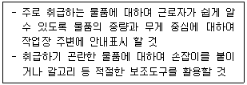
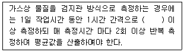
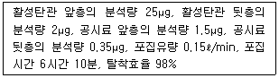
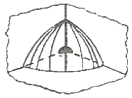
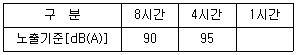
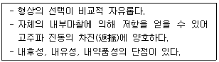
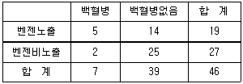

산업위생관리기사 (2009-03-01 기출문제)
1과목: 산업위생학개론
1. 다음 중 직업성 질환의 범위에 대한 설명으로 틀린 것은?
- 직업상 업무에 기인하여 1차적으로 발생하는 원발성 질환은 제외한다.
- 원발성 질환과 합병 작용하여 제2의 질환을 유발하는 경우를 포함한다.
- 합병증이 원발성 질환과 불가분의 관계를 가지는 경우를 포함한다.
- 원발성 질환에 떨어진 다른 부위에 같은 원인에 의한 제2의 질환을 일으키는 경우를 포함한다.
(정답률: 97%)

2. 다음 중 피로에 의하여 신체에 쌓이게 되는 피로물질은?
- 이산화탄소(CO2)
- 젖산(Lactic Acid)
- 지방산(Fatty Acid)
- 아미노산(Amino Acid)
(정답률: 100%)
3. ACGIH는 작업대사량에 따라 작업강도를 경작업, 중등도작업, 심한 작업으로 구분하였는데 다음 중 “심한 작업”에 해당하는 것은?
- 200 ~ 350 kcal/h
- 350 ~ 500 kcal/h
- 500 ~ 750 kcal/h
- 750 ~ 1000 kcal/h
(정답률: 52%)
4. 다음 중 산업위생 관련 기관의 약자와 명칭이 잘못 연결된 것은?
- ACGIH : 미국산업위생협회
- OSHA : 산업안전보건청(미국)
- NIOSH : 국립산업안전보건연구원(미국)
- IARC : 국제암연구소
(정답률: 85%)
5. 다음 중 산업피로에 대책으로 적당하지 않은 것은?
- 작업의 숙련도를 높인다.
- 작업과정에 따라 적절한 휴식시간을 삽입한다.
- 작업환경을 정리·정돈한다.
- 휴식은 장시간 휴식하는 것이 여러 번 나누어 휴식하는 것보다 효과적이다.
(정답률: 63%)
6. TLV-TWA(Time-Weighted Average)의 허용농도보다 3배가 높을 경우 권고되는 노출시간은? (단, ACGIH 에서의 근로자 노출의 상한치와 노출시간에 대한 권고 기준이다.)
- 10분 이하
- 20분 이하.
- 30분 이하
- 40분 이하
(정답률: 93%)
7. 산업안전보건법상 사업주는 몇 kg 이상의 중량을 들어올리는 작업에 근로자를 종사하도록 할 때 다음과 같은 조치를 취하여야 하는가?

- 3kg
- 5kg
- 10kg
- 15kg
(정답률: 93%)
8. 어느 사업장에서 톨루엔(C6H5CH3)의 농도가 0℃ 일 때 100ppm 이었다. 기압의 변화없이 기온이 25℃ 로 올라갈 때 농도는 약 몇 mg/m3로 예측되는가?(오류 신고가 접수된 문제입니다. 반드시 정답과 해설을 확인하시기 바랍니다.)
- 325
- 345
- 365
- 375
(정답률: 17%)
9. 다음 중 산업피로를 줄이기 위한 바람직한 교대근무에 관한 내용으로 틀린 것은?
- 근무시간의 간격은 15 ~ 16시간 이상으로 하여야 한다.
- 야간근무 교대시간은 상오 0시 이전에 하는 것이 좋다.
- 야간근무는 연속할 경우 1주일 이내로 이루어져야 피로의 누적을 피할 수 있다.
- 야간근무시 가면(假眠)시간은 근무시간에 따라 2 ~ 4시간으로 하는 것이 좋다.
(정답률: 70%)
10. 연평균 근로자수가 200명인 사업장에서 지난 한 해동안 12건의 재해로 인하여 15명의 사상자가 발생하였다면 이 사업장의 연천인율은 얼마인가?
- 30
- 45
- 60
- 75
(정답률: 80%)
11. 다음 중 심리학적 적성검사와 가장 거리가 먼 것은?
- 지능검사
- 인성검사
- 지각동작검사
- 감각기능검사
(정답률: 91%)
12. 다음 중 “사무실 공기관리”에 대한 설명으로 틀린 것은?
- 관리기준은 8시간 시간가중평균농도 기준이다.
- 이산화탄소와 일산화탄소는 비분산적외선검출기의 연속 측정에 의한 직독식 분석방법에 의한다.
- 이산화탄소의 측정결과 평가는 각 지점에서 측정한 측정치 중 평균값을 기준으로 비교·평가한다.
- 공기의 측정시료는 사무실 내에서 공기의 질이 가장 나쁠 것으로 예상되는 2곳 이상에서 사무실 바닥면의 0.9 ~ 1.5m 의 높이에서 채취한다.
(정답률: 97%)
13. 일반적으로 오차는 계통오차와 우발오차로 구분되는데 다음 중 계통오차에 관한 내용으로 틀린 것은?
- 측정기 또는 분석기기의 미비로 기인되는 오차이다.
- 계통오차가 작을 때는 정밀하다고 말한다.
- 크기와 부호를 추정할 수 있고 보정할 수 있다.
- 계통오차의 종류로는 외계오차, 기계오차, 개인오차가 있다.
(정답률: 87%)
14. 다음 중 직업성 암으로 최초 보고된 것은?
- 백혈병
- 음낭암
- 방광암
- 폐암
(정답률: 95%)
15. 다음 중 산업안전보건법상 특수건강진단 대상자에 해당하지 않는 것은?
- 고온환경 하에서 작업하는 근로자
- 소음환경 하에서 작업하는 근로자
- 자외선 및 적외선을 취급하는 근로자
- 저기압 하에서 작업하는 근로자
(정답률: 60%)
16. 다음 중 “도수율”에 관한 설명으로 틀린 것은?
- 산업재해의 발생빈도를 나타내는 것이다.
- 연근로시간 합계 100만 시간당의 재해발생 건수이다.
- 사망과 경상에 따른 재해강도를 고려한 값이다.
- 일반적으로 1인당 연간근로시간수는 2400시간으로 한다.
(정답률: 76%)
17. 국소피로 평가는 근전도(EMG)를 많이 사용하는데 피로한 근육에서 측정된 근전도가 정상 근육에 비하여 나타나는 특성이 아닌 것은?
- 총전압의 증가
- 평균 주파수의 감소
- 총전류의 감소
- 저주파수 힘의 증가
(정답률: 70%)
18. 왼손을 주로 사용하는 근로자의 오른손 평균 힘은 40kp이고, 왼손의 평균 힘은 50kp 이다. 이 근로자가 무게 4kg 인 상자를 두 손으로 들어올릴 경우 작업강도(%MS)는 얼마인가?
- 1
- 3
- 5
- 7
(정답률: 80%)
19. 다음 중 전신피로의 원에 대한 내용으로 틀린 것은?
- 산소공급의 부족
- 작업강도의 증가
- 혈중포도당 농도의 저하
- 근육내 글리코겐 양의 증가
(정답률: 92%)
20. 다음 중 사무실 오염물질에 대한 관리기준의 단위가 다른 것은?
- 석면
- 오존
- 일산화탄소
- 이산화질소
(정답률: 79%)
2과목: 작업위생측정 및 평가
21. 고체 흡착제를 이용하여 시료채취를 할 때 영향을 주는 인자에 관한 설명으로 틀린 것은?
- 오염물질 농도 : 공기 중 오염물질의 농도가 높을수록 파과 용량은 증가한다.
- 습도 : 습도가 높으면 극성 흡착제를 사용할 때 파과공기량이 적어진다.
- 온도 : 모든 흡착은 발열반응이므로 온도가 낮을수록 흡착에 좋은 조건인 것은 열역학적으로 분명하다.
- 시료채취유량 : 시료채취유량이 높으면 쉽게 파과가 일어나나 코팅된 흡착제인 경우는 그 경향이 약하다.
(정답률: 55%)
22. 측정값이 17, 5, 3, 13, 8, 7, 12 및 10 일 때 통계적인 대표값 9.0 은 다음 중 어느 통계량에 해당 되는가?
- 산술평균
- 중간값(median)
- 최빈값(mode)
- 기하평균
(정답률: 79%)
23. 실리카겔관이 활성탄관에 비하여 가지고 있는 장점이 아닌 것은?
- 극성물질을 채취한 경우 물, 메탄올 등 다양한 용매로 쉽게 탈착한다.
- 추출액이 화학분석이나 기기분석에 방해물질로 작용하는 경우가 많지 않다.
- 매우 유독한 이황화탄소를 탈착용매로 사용하지 않는다.
- 수분을 잘 흡수한다.
(정답률: 69%)
24. 1차 표준 기구 중 일반적 사용범위가 10~500mL/분, 정확도는 ±0.⑤~0.25% 인 것은?
- 폐활량계
- 가스치환병
- 건식가스미터
- 습식테스트 미터
(정답률: 82%)
25. 작업환경측정 결과 염화메틸 20ppm, 염화벤젠 20ppm 및 클로로포름 30ppm 이 검출되었다. 이 혼합물의 노출허용농도 기준은? (단, 각 노출기준농도는 염화메틸 : 100ppm, 염화벤젠 : 75ppm, 클로로포름 : 50ppm, 상가작용)
- 약 46 ppm
- 약 56 ppm
- 약 66 ppm
- 약 76 ppm
(정답률: 75%)
26. 초기무게가 1.260g인 깨끗한 PVC 여과지를 하이볼륨 시료채취기(High-volume sampler)에 장치하여 어떤 작업장에서 오전 9시부터 오후 5시까지 4L/분의 유량으로 시료 채취기를 작동시킨 후 여과지의 무게를 측정한 결과, 1.280g 이었다면 채취한 입자상 물질의 평균농도(mg/m3)는?
- 7.8
- 10.4
- 15.3
- 19.2
(정답률: 69%)
27. 고열 측정시간에 관한 기준으로 틀린 것은?
- 흑구 및 습구흑구온도 측정시간 : 직경이 15센티미터일 경우 25분 이상
- 흑구 및 습구흑구온도 측정시간 : 직경이 7.5센티미터 또는 5센티미터일 경우 15분 이상
- 습구온도 측정시간 : 아스만통풍건습계 25분 이상
- 습구온도 측정시간 : 자연습구온도계 5분 이상
(정답률: 77%)
28. 먼지의 한쪽 끝 가장자리와 다른 쪽 끝 가장자리 사이의 거리로 과대평가될 가능성이 있는 입자성 물질의 직경은?
- 마틴 직경(Martin diameter)
- 페레트 직경(Feret’s diameter)
- 공기역학 직경(Aerodynamic diameter)
- 등면적 직경(Projected Area diameter)
(정답률: 86%)
29. NaOH(나트륨 원자량 : 23) 20g을 10리터의 용액에 녹였을 때 이 용액의 물농도는?
- 0.⑤M(mol/ℓ)
- 0.1M(mol/ℓ)
- 0.5M(mol/ℓ)
- 1.0M(mol/ℓ)
(정답률: 54%)
30. 작업상 소음수준을 누적소음노출량 측정기로 측정할 경우 기기 설정으로 맞는 것은?
- Threshold=80dB, Criteria=90dB, Exchange Rate=10dB
- Threshold=90dB, Criteria=80dB, Exchange Rate=10dB
- Threshold=80dB, Criteria=90dB, Exchange Rate=5dB
- Threshold=90dB, Criteria=80dB, Exchange Rate=5dB
(정답률: 97%)
31. 단위작업장소에서 소음의 강도가 불규칙적으로 변동하는 소음을 누적소음 노출량 측정기로 측정하였다. 누적소음 노출량이 300%인 경우 TWA[dB(A)]는? (단, TWA 산출식 적용)
- 92
- 98
- 103
- 106
(정답률: 78%)
32. 가스상 물질에 대한 시료채취방법인 순간시료채취방법을 사용할 수 없는 경우와 가장 거리가 먼 것은?
- 오염물질의 농도가 시간에 따라 변할 때
- 공기중 오염물질의 농도가 낮을 때
- 근로자에 대한 폭로시간이 일정하지 않을 때
- 시간가중평균치를 구하고자 할 때
(정답률: 50%)
33. 다음은 가그상 물질의 측정횟수에 관한 내용이다. ( )안에 맞는 내용은?

- 2회
- 4회
- 6회
- 8회
(정답률: 69%)
34. 음향출력 50 watt 인 소음원으로부터 3m 되는 지점에서의 음압수준은? (단, 무지향성 점음원, 자유공간 기준)
- 92 dB
- 98 dB
- 108 dB
- 116 dB
(정답률: 57%)
35. 유도결합 플라스마 원자발광분석기의 장점으로 틀린 것은?
- 검량선의 직선성 범위가 넓다.
- 분광학적 방해 영향이 없다.
- 여러 금속을 분석할 경우 시간이 적게 소요된다.
- 원자흡광광도계보다 더 좋거나 적어도 같은 정밀도를 갖는다.
(정답률: 62%)
36. 가스크로마토그래피(GC) 분석에서 분해능(또는 분리도라고도 함 : resolution. R)을 높이기 위한 방법이 아닌 것은?
- 시료의 양을 적게 한다.
- 고정상의 양을 적게 한다.
- 고체 지지체의 입자크기를 작게 한다.
- 분리관(column)의 길이를 짧게 한다.
(정답률: 85%)
37. 측정치 1, 3, 5, 7, 9 의 변이 계수는?
- 약 0.13
- 약 0.63
- 약 1.33
- 약 1.83
(정답률: 70%)
38. 폴리카보네이트 재질에 레어저빔을 쏘아 공극을 일직선으로 만든 막여과지로 투과전자현미경분석을 위한 석면의 채취에 이용되는 것은?
- Nucleopore 여과지
- Cellulose ester 여과지
- Polytetrafluroethylene 여과지
- PVC 여과지
(정답률: 49%)
39. 일정한 부피조건에서 압력과 온도는 비례한다는 표준 가스법칙은?
- 보일의 법칙
- 샤를의 법칙
- 게이-루삭의 법칙
- 라울트의 법칙
(정답률: 71%)
40. 활성탄관을 이용하여 시료를 포집한 후 분석한 결과가 다음과 같다면 시료 농도는?

- 0.52 mg/m3
- 0.46 mg/m3
- 0.35 mg/m3
- 0.21 mg/m3
(정답률: 68%)
3과목: 작업환경관리대책
41. 용접 흄이 발생하는 공정의 작업대에 부착 고정하여 개구면적이 0.6m2인 측방 외부식 테이블상 플랜지 부착 장방형 후드를 설치하고자 한다. 제어속도가 0.4m/s, 소요 송풍량이 63.6m3/min이라면, 발생원으로부터 어느 정도 떨어진 위치에 후드를 설치해야 하는가?
- 0.52m
- 0.69m
- 0.73m
- 0.82m
(정답률: 53%)
42. 약간의 공기 움직이이 있고 낮은 속도로 오염물질이 배출되는 스프레이 도장, 용접, 도금, 저속 콘베이어 운반 공정에서의 제어속도 범위로 가장 적절한 것은? (단, ACGIH 권고 기준)
- 0.5 ~ 1.0m/sec
- 1.0 ~ 2.5m/sec
- 2.5 ~ 4.0m/sec
- 4.0 ~ 5.5m/sec
(정답률: 59%)
43. 가로 30m, 세로 20m, 높이 4m 의 작업장에 희석 환기를 시간당 4번 행한다면 필요한 공기량은?
- 120 m3/min
- 160 m3/min
- 2400 m3/hr
- 8040 m3/hr
(정답률: 61%)
44. 방진마스크의 필요조건으로 틀린 것은?
- 흡기와 배기저항 모두 낮은 것이 좋다.
- 흡기저항 상승률이 높은 것이 좋다.
- 안면밀착성이 큰 것이 좋다.
- 무게중심은 안면에 강한 압박감을 주지 않는 위치에 있는 것이 좋다.
(정답률: 85%)
45. 공기정화장치의 한 종류인 원심력 제진장치의 분리계수(separatiom factor)에 대한 설명으로 맞는 것은?
- 분리계수는 중력가속도와 비례한다.
- 사이클론에서 입자가 작용하는 원심력을 중력으로 나눈 값을 분리계수라 한다.
- 분리계수는 입자의 접속방향속도에 반비례한다.
- 분리계수는 사이클론의 원추하부 반경에 비례한다.
(정답률: 67%)
46. 청력보호구의 차음효과를 높이기 위해서 유의할 사항으로 볼 수 없는 것은?
- 청력보호구는 머리의 모양이나 귓구멍에 잘 맞는 것을 사용하여 차음효과를 높이도록 한다.
- 청력보호구는 기공이 많은 재로로 만들어 흡음효과를 높여야 한다.
- 청력보호구를 잘 고정시켜 보호구 자체의 진동을 최소한도로 줄이도록 한다.
- 귀덮개 형식의 보호구는 머리카락이 길 때와 안경테가 굵거나 잘 부착되지 않을 때에는 사용하지 말도록 한다.
(정답률: 98%)
47. 작업환경관리 대책 중 대치물질 개선에 해당되지 않는 것은?
- 금속세척작업 : TCE를 대신하여 계면활성제 사용
- 샌드라스트 : 모래를 대신하여 암면 유리섬유 사용
- 야광시계의 자판 : 라듐(Ra) 대신 인
- 분체 입자를 큰 입자로 대치
(정답률: 83%)
48. 강제환기를 실시할 때 환기효과를 제고시킬 수 있는 원칙으로 틀린 것은?
- 오염물질 배출구는 가능한 한 오염원으로부터 가까운 곳에 설치하여 ‘ 점 환기’의 효과를 얻는다.
- 공기가 배출되면서 오염장소를 통과하도록 공기 배출구와 유입구의 위치를 선정한다.
- 공기배출구와 근로자의 작업위치 사이에 오염원이 위치하여야 한다.
- 공기배출구를 창문이나 문 근처에 위치시켜 ‘환기상승’효과를 얻는다.
(정답률: 73%)
49. 배출원이 많아서 여러 개의 후드를 주관에 연결할 경우, (분지관의 수가 많고 덕트의 압력손실이 클 때) 총압력 손실계산법으로 가장 적절한 방법은?
- 정압조절평형법
- 저항조절평형법
- 등가조절평형법
- 속도압평형법
(정답률: 73%)
50. 전기집진장치에 관한 설명으로 틀린 것은?
- 압력손실이 적어 송풍기의 가동비용이 저렴하다.
- 고온가스를 처리할 수 있다.
- 배출가스의 온도강하가 적으며 대량의 가스처리가 가능하다.
- 전압변동과 같은 조건 변동에 쉽게 적응할 수 있다.
(정답률: 75%)
51. 푸쉬풀 후드(push-pull hood)에 대한 설명으로 적합하지 않는 것은?
- 도금조와 같이 폭이 넓은 경우, 필요유량을 증가시켜 포집효율을 향상시킨다.
- 공정에서 작업물체를 처리조에 넣거나 꺼내는 중에 공기막이 파괴되어 오염물질이 발생하는 단점이 있다.
- 개방조 한 변에서 압축공기를 이용하여 오염물질이 발생하는 표면에 공기를 불어 반대쪽에 오염물질이 도달하게 한다.
- 제어속도는 푸쉬 제트기류에 의해 발생한다.
(정답률: 45%)
52. 층류와 난류 흐름을 판별하는 데 중요한 역할을 하는 레이놀즈수를 알맞게 나타낸 것은?
- 관성력/점성력
- 관성력/중력
- 관성력/탄성력
- 압축력/관성력
(정답률: 82%)
53. 지름이 1m인 원형 후드 입구로부터 2m 떨어진 지점에 오염물질이 있다. 제어풍속이 2m/sec일 때 후드의 필요 환기량(m3/sec)은? (단, 공간에 위치하며 플렌지 없음)
- 41
- 61
- 82
- 98
(정답률: 76%)
54. 흡인풍량이 100m3/min, 송풍기 유효전압이 150mmH2O, 송풍기 효율이 80%, 여유율이 1.2인 송풍기의 소요 동력은? (단, 송풍기 효율과 원동기 여유율을 고려함)
- 2.7kW
- 3.7kW
- 4.7kW
- 5.7kW
(정답률: 80%)
55. 어떤 공장에서 1시간에 1ℓ의 Methylene chloride(비중 1.336, 분자량 84.94, TLV 500ppm)가 증발되어 작업환경을 오염시키고 있다. 여유계쑤 K가 4 라면 전체환기량 Q[m3/min]는? (단, 20℃, 1기압 기준, 단위환산계수 F는 0.4이다.)
- 30
- 40
- 50
- 60
(정답률: 58%)
56. 어느 관내의 속도압이 3.5mmH2O일 때 유속(m/min)은? (단, 공기의 비중량은 1.2kgf/m3)
- 423
- 454
- 475
- 492
(정답률: 59%)
57. 후드의 유입계수가 0.7 이고 속도압이 20 mmH2O일 때 후드의 유입손실은?
- 약 1.5 mmH2O
- 약 20.8 mmH2O
- 약 32.5 mmH2O
- 약 40.8 mmH2O
(정답률: 68%)
58. 공기 중의 사염화탄소 농도가 0.2%라면 정화통의 사용가능 시간은? (단, 사염화탄소 0.5%에서 100분간 사용 가능한 정화통기준)
- 150분
- 200분
- 250분
- 300분
(정답률: 71%)
59. 폭과 길이의 비(종횡비, W/L)가 0.2 이하인 슬롯형 후드의 경우, 배풍량은 다음 중 어느 공식에 의해서 산출하는 것이 가장 적절하겠는가? (단, 플렌지가 부착되지 않았음. L : 길이, W : 폭, X : 오염원에서 후드 개구부까지의 거리, V : 제어속도, 단위는 적절하다고 가정함)
- Q = 2.6 LVX
- Q = 3.7 LVX
- Q = 4.3 LVX
- Q = 5.2 LVX
(정답률: 79%)
60. 회전차 외경이 600mm인 원심 송풍기의 풍랴은 200m3/min이다. 회전차 외경이 1200mm인 동류(상사구조)의 송풍기가 동일한 회전수로 운전된다면 이 송풍기의 풍량은? (단, 두 경우 모두 표준공기를 취급한다.)
- 1200m3/min
- 1600m3/min
- 1800m3/min
- 2200m3/min
(정답률: 71%)
4과목: 물리적유해인자관리
61. 생체와 환경 사이의 열교환에 영향을 미치는 4가지 요인과 거리가 먼 것은?
- 기온(air temperature)
- 기류(air velocity)
- 기압(air pressure)
- 복사열(radiant temperature)
(정답률: 71%)
62. 그림과 같이 소음원이 작업장의 모서리에 놓여 있을 때 지향계수(directivity factor)는 얼마인가?

- 2
- 4
- 8
- 16
(정답률: 58%)
63. 다음 표는 우리나라의 소음 노출기준을 나타낸 것이다. 1시간에 해당하는 노출기준[dB(A)]으로 옳은 것은?

- 100
- 1⑤
- 110
- 115
(정답률: 63%)
64. 다음 중 소음발생의 대책으로 가장 먼저 고려해야 할 사항은?
- 소음전파차단
- 차음보호구착용
- 소음노출시간단축
- 소음원밀폐
(정답률: 78%)
65. 다음 중 열사병(heat stroke)에 관한 설명으로 옳은 것은?
- 피부는 차갑고, 습한 상태로 된다.
- 지나친 발한에 의한 탈수와 염분소실이 원인이다.
- 보온을 시키고, 더운 커피를 마시게 한다.
- 뇌 온도의 상승으로 체온조절중추의 기능이 장해를 받게 된다.
(정답률: 75%)
66. 전리방사선의 외부조사에 대한 방어대책으로 고려하여야 할 요소가 아닌 것은?
- 대치
- 거리
- 차폐
- 시간
(정답률: 68%)
67. 다음 방사선의 단위 중 1Gy 에 해당되는 것은?
- 102erg/g
- 0.1Ci
- 1000rem
- 100rad
(정답률: 86%)
68. 다음 중 진동에 의한 감각적 영향에 관한 설명으로 틀린 것은?
- 맥박수가 증가한다.
- 1~3Hz에서 호흡이 힘들고 산소소비가 증가한다.
- 13Hz에서 허리, 가슴 및 등 쪽에 감각적으로 가장 심한 통증을 느낀다.
- 신체의 공진현상은 앉아 있을 때가 서 있을 때보다 심하게 나타난다.
(정답률: 50%)
69. 전자파의 정도를 나타내는 자속밀도의 단위인 G(Gauss)와 T(Tesla)의 관계로 옳은 것은?
- 1T = 102G
- 1T = 103G
- 1T = 104G
- 1T = 105G
(정답률: 49%)
70. 다음 중 고열로 인한 스트레스를 평가하는 지수에 해당되지 않는 것은?
- 열평형
- 불쾌지수
- 유효온도
- 대사열
(정답률: 57%)
71. 다음 중 진동에 의한 생체영향과 가장 거리가 먼 것은?
- C5 dip 현상
- Raynaud 현상
- 내분비계 장해
- 뼈 및 관절의 장해
(정답률: 76%)
72. 다음 중 소음성 난청에 관한 설명으로 옳은 것은?
- 음압수준은 낮을수록 유해하다.
- 소음의 특성은 고주파음보다 저주파음이 더 유해하다.
- 개인의 감수성은 소음에 노출된 모든 사람이 다 똑같이 반응한다.
- 소음 노출시간은 간헐적 노출이 계속적 노출보다 덜 유해하다.
(정답률: 72%)
73. 다음 중 고압환경의 인체작용에 있어 2차적 가압현상에 해당하지 않는 것은?
- 공기 전색
- 산소 중독
- 질소 마취
- 이산화탄소 중독
(정답률: 82%)
74. 다음 설명에 해당하는 방진재료는?

- 코일용수철
- 펠트
- 공기용수철
- 방진고무
(정답률: 82%)
75. 산업안전보건법상 상시 작업을 실시하는 장소에 대한 작업면의 조도 기준으로 옳은 것은?
- 기타 작업 : 50럭스 이상
- 보통 작업 : 150럭스 이상
- 정밀 작업 : 500럭스 이상
- 초정밀 작업 : 1000럭스 이상
(정답률: 79%)
76. 그늘막 내에서의 자연습구온도가 25℃, 건구온도가 32℃, 흑구온도가 20℃일 때 습구흑구온도지수(℃)는 얼마인가?
- 23.5
- 24.7
- 28.4
- 28.9
(정답률: 72%)
77. 다음 중 자연조명에 관한 설명으로 틀린 것은?
- 균일한 조명을 요하는 작업실은 동북 또는 북창이 좋다.
- 차의 면적은 바닥 면적의 15~20% 정도가 이상적이다.
- 개각은 4~5°가 좋으며, 개각이 작을수록 실내는 밝다.
- 입사각은 28° 이상이 좋으며, 입사각이 클수록 실내는 밝다.
(정답률: 87%)
78. 고압환경에서 일어날 수 있는 생체작용과 가장 거리가 먼 것은?
- 폐수종
- 압치통
- 부종
- 폐압박
(정답률: 67%)
79. 1fc(foot candle)은 약 몇 룩스(lux)인가?
- 3.9
- 8.9
- 10.8
- 13.4
(정답률: 72%)
80. 다음 중 산업안전보건법상 “적정한 공기”에 해당하는 것은?
- 산소농도의 범위가 16%인 공기
- 탄산가스의 농도가 1 : 0%인 공기
- 산소농도의 범위가 25%인 공기
- 황화수소의 농도가 25ppm인 공기
(정답률: 62%)
5과목: 산업독성학
81. 다음 보기와 같은 유해물질들이 호흡기 내에서 자극하는 부위로 가장 적절한 것은?
- 상기도점막
- 폐조직
- 종밀기관지
- 폐포점막
(정답률: 85%)
82. 다음 중 유기용제 중독자의 응급처치로 적절하지 않은 것은?
- 용제가 묻은 의복을 벗긴다.
- 의식장해가 있을 때에는 산소를 흡입시킨다.
- 차가운 장소로 이동하여 정신을 긴장시킨다.
- 유기용제가 있는 장소로부터 대피시킨다.
(정답률: 86%)
83. 다음 중 납중독을 확인하는데 이용하는 시험으로 적절하지 않은 것은?
- 혈중의 납
- 헴(heme)의 대사
- 신경전달속도
- EDTA 흡착능
(정답률: 81%)
84. 작업환경 중에서 부유 분진이 호흡기계에 축적되는 주요 작용기전과 가장 거리가 먼 것은?
- 충돌
- 침강
- 농축
- 확산
(정답률: 80%)
85. 호흡기계로 들어온 먼지에 대하여 인체가 가지는 방어기전을 조합한 것으로 가장 적절한 것은?
- 면역작용과 대식세포의 작용
- 폐포의 활발한 가스교환과 대식세포의 작용
- 점액 섬모운동과 대식세포에 의한 정화
- 점액 섬모운동과 면역작용에 의한 정화
(정답률: 75%)
86. 다음 중 수은의 성상에 관한 설명으로 틀린 것은?
- 무기수은화합물의 독성은 알킬수은화합물보다 강핟.
- 수은화합물은 크게 무기수은화합물과 유기수은화합물로 대별한다.
- 무기수은화합물은 대부분의 금속과 화합하여 아말감을 만든다.
- 무기수은화합물은 질산수은, 승홍, 뇌홍 등이 있으며, 유기수은화합물에는 페닐수은, 에틸수은 등이 있다.
(정답률: 75%)
87. 다음 중 호흡기에 대한 자극작용이 가장 심한 것은?
- 케톤류 유기용제
- 글리콜류 유기용제
- 에스테르류 유기용제
- 알데히드류 유기용제
(정답률: 66%)
88. 공기 중 일산화탄소 농도가 10mg/m3 인 작업장에서 1일 8시간 동안 작업하는 근로자가 흡입하는 일산화탄소의 양은 몇 mg 인가? (단, 근로자의 시간당 평균 흡기량은 1250L 이다.)
- 10
- 50
- 100
- 500
(정답률: 79%)
89. 다음 중 유기용제벌 생체내 대사물이 잘못 짝지은 것은?
- 톨루엔 – 마뇨산
- 크실렌 – 만델린산
- 에틸벤젠 – 만델린산
- 벤젠 – 페놀
(정답률: 80%)
90. 생물학적 지표로 이용되는 대사산물을 측정하고자 할 때 화학물질에 대한 채취시간의 조합이 틀린 것은?
- Acetone - 작업종료시
- Carbon Monoxide - 주말 작업 종료시
- Chlorobenzene - 작업 종료시
- Chromium(6가) - 주말 작업 종료시
(정답률: 52%)
91. 화학물질이 사람에게 흡수되어 초래되는 바람직하지 않은 영향의 범위·정도·특성을 무엇이라 하는가?
- 치사량(Lethal Dose)
- 유효량(Effective Dose)
- 위험(Risk)
- 독성(toxicity)
(정답률: 50%)
92. 다음 중 망간에 대한 설명으로 틀린 것은?
- 만성중독은 3가 이상의 망간화합물에 의해서 주로 발생한다.
- 전기용접봉 제조업, 도자기 제조업에서 발생된다.
- 언어장애, 균형감각상실 등의 증세를 보인다.
- 호흡기 노출이 주경로이다.
(정답률: 72%)
93. 다음 중 유기성 분진에 의한 진폐증에 해당하는 것은?
- 탄소폐증
- 규폐증
- 활석폐증
- 농부폐증
(정답률: 77%)
94. 다음 표는 A 작업장의 백형병과 벤젠에 대한 코호트연구를 수행한 결과이다. 이 때 벤젠의 백혈병에 대한 상대위험비는 약 얼마인가?

- 3.29
- 3.55
- 4.64
- 4.82
(정답률: 63%)
95. 다음 중 다핵방향족 탄화수소(PAHs)에 대한 설명으로 틀린 것은?
- 벤젠고리가 2개 이상이다.
- 대사가 활발한 다핵 고리화합물로 되어 있으며 수용성이다.
- 시토크롬(cytochrome) P-450 의 준개체단에 의하여 대사된다.
- 철강 제조업에서 석탄을 건류할 때나 아스팔트를 콜타르 피치로 포장할 때 발생된다.
(정답률: 43%)
96. 다음 중 부식방지 및 도금 등에 사용되며 급성중독시 심한 신장장해를 일으키고, 만성중독시 코, 폐 등의 점막에 병변을 일으키는 물질은?
- 무기연
- 크롬
- 알루미늄
- 비소
(정답률: 79%)
97. 다음 중 중금속에 의한 폐기능의 손상에 관한 설명으로 틀린 것은?
- 철폐증(siderosis)은 철분진·흡입에 의한 암발생(A1)이며, 중피종과 관련이 없다.
- 화학적 폐렴은 베릴륨, 산화카드뮴 에어로졸 노출에 의하여 발생하며 발열, 기침, 폐기종이 동반된다.
- 금속열은 금속이 용융점 이상으로 가열될 때 형성되는 산화금속을 흄 형태로 흡입할 때 발생한다.
- 6가크롬은 폐암과 비강암 유발인자로 작용한다.
(정답률: 89%)
98. 다음 중 유기용제별 특이증상을 잘못 짝지은 것은?
- 메탄올 – 시산경장해
- 노르말헥산 및 메틸부틸게톤 – 생식기장해
- 이황화탄소 – 중추신경장해
- 염화탄화수소 – 간장해
(정답률: 62%)
99. 다음 중 피부에 궤양을 유발시키는 가장 대표적인 물질은?
- 크롬산(chromic acid)
- 콜타르 피치(coal tar pitch)
- 에폭시수지(epoxy resin)
- 벤젠(benzene)
(정답률: 56%)
100. 근로자의 유해물질 노출 및 흡수 정도를 종합적으로 평가하기 위하여 생물학적 측정이 필요하다. 또한 유해물질의 배출 및 축적되는 속도에 따라 시료 채취시기를 적절히 정해야 하는데, 다음 중 시료채취 시기에 제한을 가장 작게 받는 것은?
- 호기중 벤젠
- 요중 총페놀
- 요중 납
- 혈중 총무기수은
(정답률: 77%)